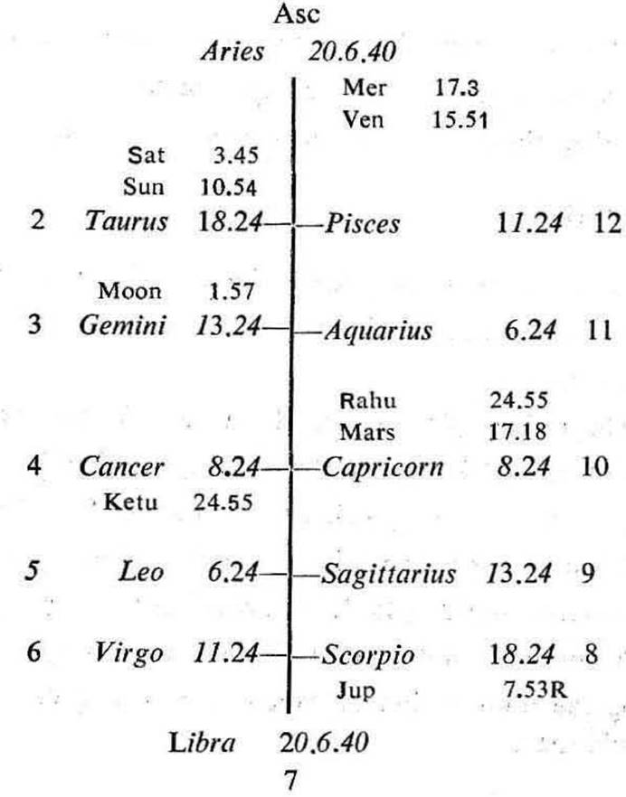
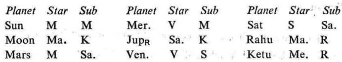
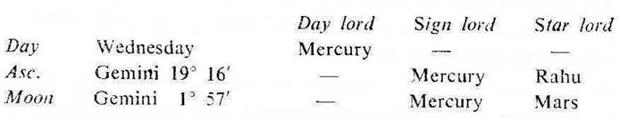

Question. Will I be successful in constructing a building in a Co-operative society?
Number. 15 (out of 249)
Place of Judgment. 23°N 2′, 72°E 35′.
Time of Judgment. 26-5-1971, Wednesday; 8-46 A.M. I.S.T.


If the cuspal sub lord of the 4th be the significator of 4, 11 or 12 one will have his own building during the joint period of the significators of 4, 11 and 12.
The querent was trying to have a plot in a Co-operative society but he was hesitating to invest money in the society. Hence he made a query.
In this horary map Moon owns 4; its star lord Mars aspects the 4th; its sub lord Ketu is in 4. So Moon is the significator of 4 (building) and connected with Mars (land or building) and 4. Hence it clearly shows that the query is regarding the building or house.
11th cusp The house 11 denotes society. So if its sub lord is connected with the 4th house, the querent will be successful in constructing a building in the Co-operative society.
The sub lord of the 11th cusp is Moon. It is the significator of 4 as mentioned above. Its star lord Mars is direct in motion. Moon is the fastest moving planet. So the querent will be succesful in constructing his building in the Co-operative society very soon.
4th cusp. The sub lord of the 4th cusp is Venus. It is in its own star Venus in 12 and aspected by Mars. It is in the sub Sun the significator of 4 (being in the star Moon owning 4) which is aspected by the owner of 12 (Jupiter). So Venus is the significator of 12 (investment) and connected with Mars (land or building), 4 (house or building) and 12. Neither the cuspal sub lord Venus nor its star lord is retrograde. So it promises a building to the querent.

Ketu being aspected represents Mars. None of them is in the star or sub of a retrograde planet. So the ruling planets are Mars, Mercury, Rahu, and Ketu.
All these ruling planets are the significators of 4, 11 and 12. Mars is in the star Moon owning 4. Mercury is in the star Venus in 12. Rahu is in the star Mars (land). Ketu is in the star Mercury in 12.
All these planets are in cardinal or movable signs. So they will hasten the matter of construction during their joint period.
At the time of judgment (Mars Dasha balance 2Y 5M 21D) the querent is running the joint period of Mars, Ketu and Venus. All these planets are the significators for investment of money in constructing the house as discussed above. Mars and Ketu are among the ruling planets. Ketu is the sub period ruler and its sub period has started from 14-5-1971 and continues upto 11-10-1971. In between this time the inter periods of Mars, Rahu and Mercury will pass through. Rahu being stronger than any planet should be considered as the inter period ruler.
Mars, Ketu and Rahu will jointly operate from 15-7-1971 to 7-8-1971. So the querent will be successful in constructing the house in the Cooperative Society during this time.
By this time Sun will be transitting in Cancer through the 4th house and Mars will be in Capricorn 28° 31′R to 24° 31′R in its own star Mars (the period ruler).
It was learnt from the querent in August 1971 that the construction work of the house had reached upto the plinth level.